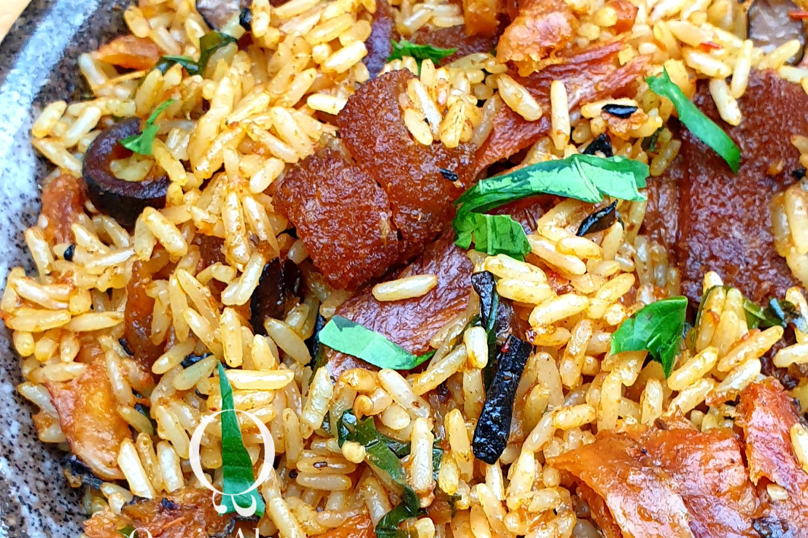

Village Rice

Description
Unlike my Native Jollof Rice, this Village Rice packs a punch in flavour and aromatic herbs. I sliced a combination of Utazi, Uziza, Efinrin (Nchuawu), Basil (local women call it curry leaf) for a rich aromatic taste. A fusion of southeastern and southwestern Naija flavours I used Iru and Ugba, a generous amount of crayfish, onions and my already hungry crew was further tormented by the aroma that wafted through the kitchen.
Ingredients
- 4 cups Long Grain Rice
- 2 cups blitzed pepper base (use a ratio of tatashe/ bawa/rodo, that suits you)
- 2 tbsp crayfish powder
- 2 medium-sized onions chopped
- 4 tbsp Iru (fermented locust beans)
- 2 little packs of Ugba
- 2 medium rolls of soft Pomo
- 3 smoked fish shredded
- A handful of stockfish flakes
- 1 cup palm oil
- Efinrin (a small branch)
- Utazi Leaves (8-12 leaves)
- Basil (a small branch)
- Salt to taste
- 2 seasoning cubes (optional, honestly not necessary)
- Water (roughly 6 cups)
- Rich meat stock (optional) (reduce water volume if cooking with stock)
Steps
- Place a clean pot on heat and bleach palm oil up slightly with the lid on. Allow bleached oil to cool before continuing your cooking.
- Turn the heat back on, add chopped onions, iru, ugba and fry till onions are tender
- Add pepper blend and season with crayfish powder, salt, *seasoning cubes, stock, half of the chopped vegetables.
- BAllow to cook for about 15 minutes on medium heat, till the water is completely reduced.
- Add rice, pomo smoked, stockfish and water.
- Continue to cook on medium heat.
- When the water level has dropped below the rice surface, cover the rice with tin foil or MoinMoin leaves, then put the lid on to trap the steam. Turn the heat to low and leave the rice to cook through.
- Once the water is dried, add the rest of your sliced vegetables, stir your village rice with a wooden ladle to ensure all the condiments are well incorporated
- Serve your village rice hot and enjoy.